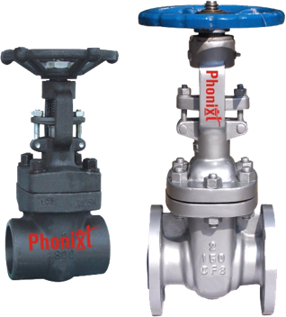
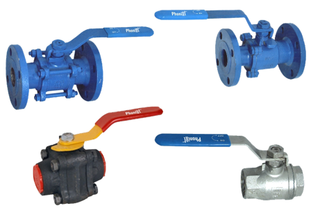
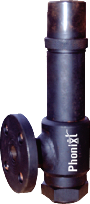
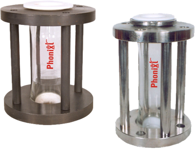
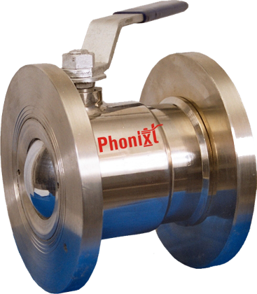

Globe Valves

Globe Valves
These valves are constructed from materials like Cast Steel, Forged Steel, and Stainless Steel to meet API, BS, and testing standards for temperatures up to 600°C. They feature O.S. & Y Type with Rising Stem design, various trim options, and end connections including Screwed, Socket weld, Butt Weld, or Flanged. Available in pressure ratings from ASA 150 to 2500 # Class DIN 2545, ND 25/40/64, and sizes ranging from 15 mm to 400 mm, they offer versatility for different applications.
Gate Valves
Gate Valves
Our valves, crafted from materials like Cast Steel (ASTM A216 WCB) and Forged Stainless Steel A182 (S.S. ASTM A 351 CF8/CF3/CF8M/CF3M), meet API 600/602 and BS-5352 design standards. Tested to API 598/BS 6755, they withstand up to 600°C. With O.S. & Y Type, Rising Stem design in sizes 15 mm to 600 mm, they suit diverse applications. Trim options include AISI SS 410 13% Cr/SS304/316, with seat materials like AISI SS 410 13% Cr/Stellited/Hard Face/Stainless Steel SS 304/316. Available in Screwed/Socket weld/Butt Weld/Flanged end connections, ASA 150-1500# Class pressure ratings ensure reliability.
Ball Valves
Ball Valves
Crafted from Stainless Steels (ASTM A 351 CF8/CF3/CF8M/CF3M), Alloy20, Forged Steel, and Cast Iron/SG Iron Cast Steels (ASTM A 216 WCA/LCB), our valves meet BS-5351 and API-6D standards. Tested to BS 5146/BS 6765, they ensure reliability. Available in Single, Two, and Three Piece designs with Fire Safe and Anti Static options, they offer versatility. Full Port options in sizes 15 mm to 400 mm, they suit diverse applications. Offering Screwed/Socket Weld/Butt Weld/Flanged connections, ASA 150/300/600/800# Class pressure ratings, and various actuator options.
Safety Valves
Safety Valves
Constructed from durable materials such as Cast Steel ASTM A 216 WCB and Stainless Steel ASTM A 351 CF8(304)/CF8M(316), our valves feature a Spring Loaded design. Available in Close Body or Angle Type patterns, they provide versatility. With seats and trims made of SS 304/316, they ensure reliability. Rated for ASA 150/300# Class pressure, they offer flexibility in operation. Available in sizes ranging from 15 mm to 150 mm, with Screwed or Flanged end connections, they suit various applications.
Y Strainer / filters

Y Strainer / filters
Crafted from Cast Steel (ASTM A 216 WCB), Stainless Steel (ASTM A 351 CF8/CF8M), Gun Metal, Cast Iron, and Fabricated (C.S./S.S. 304 & 316), our strainers offer durability. Available in "Y" Type, Port (T) Type, or Basket Type configurations, they suit diverse applications. Equipped with screens made of SS 304/316 or Brass and mesh ranging from 20MESH to 500Mesh, they ensure efficient filtration. Rated for ASA 150#, 300#, and DIN ND 16/25/40 pressure ratings, they offer reliability. With Screwed, Socket Welded, or Flanged end connections, sizes range from 15mm to 400mm ("Y" type) or 25mm to 750mm ("T"/Basket Type).
Butter fly Valves

Butter fly Valves
Our valves, built with robust materials like Cast Iron, SG Iron, Ductile Iron, Cast Steel (ASTM A216 WCB/LCB), and Stainless Steels (ASTM A 315 CF8/CF8M), meet BS 5155, API 609, MSSSB67, AWWA C504 standards. Tested to BS 6755 PART-1, they withstand PN-10/16 pressure. Available in various configurations and sizes (25 mm to 300 mm), they ensure reliability and efficiency in diverse applications.
Wafer Type Check Valves

Wafer Type Check Valves
Our valves are constructed from robust materials such as Cast Iron, Carbon Steel, and Stainless Steels (S.S. 304 - CF8 & 316 - CF8M), conforming to design standards BS 1686 and API6D. Tested to BS 5146, they are rated for ASA 150 / 300#, DIN/ND 10/16/25 pressure. Featuring Metal To Metal Seat, they ensure reliability. Available in sizes ranging from 25 mm to 600 mm for Wafer type and 15 mm to 200 mm for Disc type, they offer versatility. With options for Plained or Spring Type, and O Rings including Nitrile, Neoprene, or Teflon, they provide effective sealing.
Non Return Valves

Non Return Valves
Our valves, crafted from robust materials like Cast Steel (ASTM A 216 WCB) and Stainless Steel (ASTM A 351 CF8/CF3/CF8M/CF3M), meet API 600/602 and BS-1868/BS-5352 standards. Tested per BS 5146/BS 6755, they come in Swing or Lift Type with trim options including AISI SS 410 13% Cr, SS 304/316. Flexible end connections offer Screwed, Socket weld, But weld, or Flanged options. Rated ASA 150/300/600/800/900/1500#, DIN 2545, ND 25/40/64, in sizes 15 mm to 400 mm, handling up to 600°C.
Sight Glass
Sight Glass
Sight flow indicators offer vital fluid process visibility. Built from durable materials like carbon and stainless steel, with toughened borosilicate glass tubes, ensuring reliability. Available in Q.V.F. design, sizes range from 15 mm to 200 mm, with plug/disc & seat configurations. Flanged connections adhere to BS10 Table "E", "F", and ASA 150# Drilled standards. Double window indicators feature dual glass design, with cast and stainless steel construction. They offer secure sealing, and cater to various industrial needs with flanged ASA 150/300# Class connections and sizes from 25 mm to 200 mm.
Flush Bottom Ball Valves
Flush Bottom Ball Valves
Constructed with high-quality materials such as stainless steel (ASTM A 351CF8/CF8M) and cast steel (ASTM A 216 WCB), these valves ensure durability. They feature a one-piece design with pure PTFE/GFT/CFT seats and full ports, offering reliable performance. The S.S. 316/304 balls and flanged ASA 150/300#Class ratings ensure efficient operation. With sizes ranging from 25 mm to 200 mm, these valves are suitable for various industries including chemicals, bulk drugs, pharmaceuticals, biotech, and resin processing.
Flush Y Type Valves

Flush Y Type Valves
Crafted from premium materials like stainless steel (ASTM A 351 CF8/CF8M) and cast steel (ASTM A 216 WCB), these valves boast longevity. They feature S.S. 304/316 seats, O.S. & Y. type rising stems, and AISI S.S. 304/316 trim for reliable performance. With a pressure rating of ASA 150/300# Class and sizes ranging from 25 mm to 200 mm, they are suitable for diverse applications in industries such as chemicals, bulk drugs, pharmaceuticals, biotech, and resin processing. Additionally, they can be equipped with hydraulic or pneumatic cylinders for enhanced functionality.
pp Valves

pp Valves
These valves are constructed with durable materials such as PP, PVDF, or HDPE, ensuring longevity and resistance to corrosion. Featuring a three-piece design, they are equipped with PTFE seats and PP/PVDF/HDPE balls for reliable performance. Available with screwed or flanged end connections, they can withstand temperatures up to 80°C and working pressures of 100 PSI, making them suitable for various industrial applications.
Steam Trap

Steam Trap
These valves feature S.S. 420 investment castings for the body, cap, and disc, ensuring durability and reliability. Equipped with S.S. 316 mesh and an in-built steam trap with strainers, they provide efficient filtration and steam management. Available with screwed or socket welded end connections, they come in sizes ranging from 15 mm to 25 mm. With a temperature tolerance of up to 300°C, they are suitable for applications involving steam, hot air, oils, and hot water.
Piston Valves

Piston Valves
These valves feature cast steel ASTM A 216 WCB and stainless steel ASTM A 351CF8/CF8M (304/316) construction, ensuring strength and corrosion resistance. With O.S. & Y. Type Rising Stem design, AISI SS 410 (13% Cr.) piston and cage, and versatile trim options, they offer reliable performance. Available in screwed or flanged end connections, with PIN - 25/DIN 2545/ASA 150# Class pressure ratings, and sizes from 15 mm to 100 mm, meeting DIN - ND 25 standards.